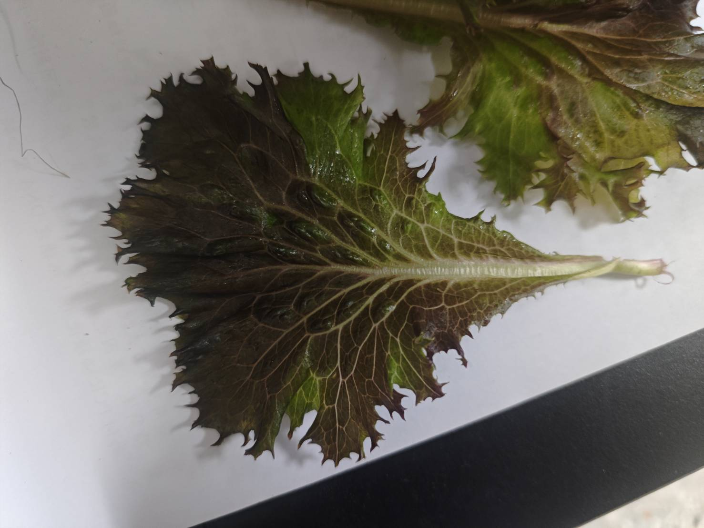
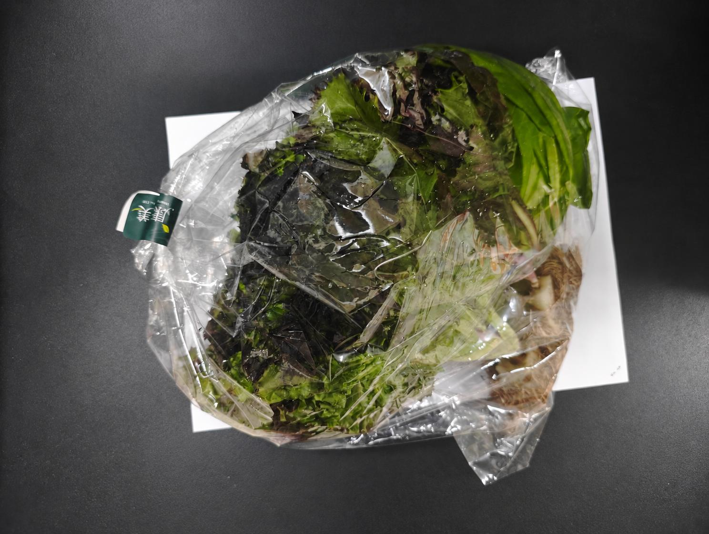
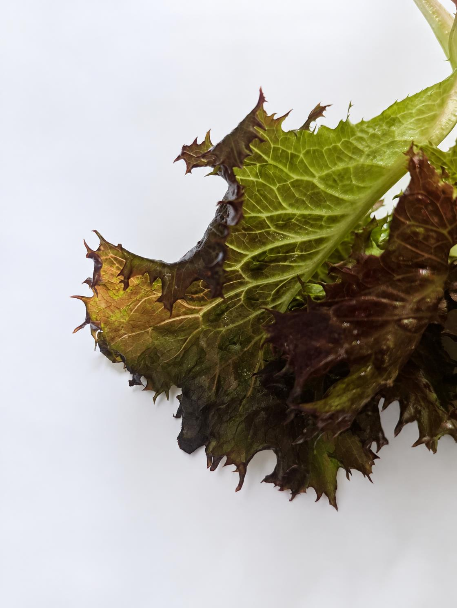
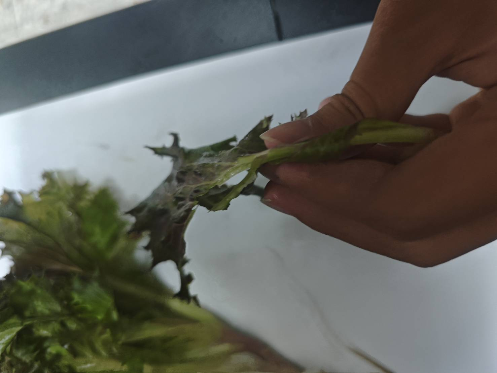

01
發生了什麼 What
生菜可能因為大小、外觀不符合市場要求，因此被丟棄

我們關注那些沒有進入市場的生菜，
也關注它們背後的原因與可能的出路。
生菜可能因為大小、外觀不符合市場要求，因此被丟棄
農民、菜商、消費者
蔬菜盛產期，或是遇到颱風、連日大雨等天氣劇烈變化之後。
產地的農田、集貨場，以及產地的果菜批發市場。
我們猜是市場過度要求外觀完美，加上產地缺乏加工去化的管道
目前可能被丟棄或做堆肥。下一步可以訪問產地農民或市場人員，查詢相關資料。
如果將格外生菜加工，是否能減少浪費
季節跟天氣是否會影響格外生菜的多寡
先釐清問題，再尋找可行的解答。
了解問題規模確認這是值得研究
驗證加工減少浪費的猜測
驗證天氣影響多寡的猜測
我們把政府公開統計整理成三個觀察：生菜這個產業有多大、劇烈天氣造成多少損失、全國一年丟掉多少食物。
我們的研究地點，正好落在全國生菜產量最大的縣市。
居全國第一，約為第二名桃園市（3,716 公噸）的 18 倍。
主要分布在西螺、麥寮、崙背、二崙、褒忠、斗南等鄉鎮。
全臺近五年總收量約落在 7.2 萬～8.6 萬公噸之間。
這是「收量」，不是「丟棄量」。它能說明這個產業有多大，但不能直接代表被丟掉多少；實際丟掉多少，仍是我們要去查證的事。
近三年三次重大災害，雲林的農業損失都在全國前段。
長條長度代表該次災害中，雲林占全臺農業損失的比例。農業統計年報也顯示，全臺農業災害的估計損失從 104 年約 161 億元，增加到 113 年約 317 億元。
官方記錄的是「被害面積與估計金額」，不是「被丟棄的生菜重量」。天氣怎麼變成格外品，仍是我們要訪問確認的部分。
把鏡頭拉遠一點，先知道「浪費」整體的量有多大。
台大研究團隊以亞太糧損資料庫推估 109（2020）年資料，相當於每人每年丟掉約 170 公斤食物。
與水果 77.4 萬公噸、米糧穀物 106 萬公噸同屬損耗大宗。
其餘約 61% 發生在加工、通路與消費端。
前環保署統計，105 年全臺 177 家餐飲、超商、量販與超市業者，每年因「賣相不佳、未拆封就過期」而丟棄的食品約 3.6 萬公噸，價值約 38 億元。這是官方資料中最貼近「外觀不合就被丟掉」的數字。
405 萬公噸是學術研究推估，不是政府普查；3.6 萬公噸只涵蓋達申報規模的連鎖通路，不含小盤商、餐廳與產地。兩個數字都不能直接換算成格外生菜的量。
農情調查記錄種了幾公頃、收了幾公噸；農業災害統計記錄被害面積與救助金額；批發市場行情記錄每天的成交均價與重量。但沒有任何一張公開表冊，記錄「因為外觀不合、沒有進入市場的那一部分」。
這個空缺，正是我們這一組要填的地方。
以上為各機關發布當時的統計或研究推估，數值可能隨報告更新而修正；正式引用時，請以原始網站最新公告為準。
可以向誰、用什麼方式去確認？
格外生菜的數量、比例與目前處理方式。
加工技術、設備需求、成本與食品安全條件。
盛產期與劇烈天氣變化，如何影響格外生菜多寡。
這是補充的研究提醒。後續若探索食品加工，仍需區分外觀瑕疵與腐敗、污染等情況，並確認食品安全及保存條件；目前尚未提出加工成效或安全性的結論。
從提出問題，到訪談、整理資料，再逐步驗證想法。
聚焦生菜浪費的原因，列出待確認事項。
查詢公開資料，規劃產地與專業訪談。
整理浪費規模、加工條件及天氣影響。
依據調查結果，提出可能的處理方向。
待補充：訪談日期、地點、對象與觀察。
已整理公開統計於「資料觀察」；訪談與在地資料仍待補充。
待補充：案例比較、成本與研究結論。
組員實際拍攝的生菜紀錄：包裝、葉緣損傷與挑揀過程。



以下為初步構想，會依研究結果調整。
將外觀不佳但新鮮的葉片低溫烘乾，做成可長期保存的健康零食。
乾燥研磨成粉，可加入麵包、麵條或飲品，延長生菜利用價值。
挑選可食用部分清洗分裝，以較低價格提供給餐廳或學校午餐。
真正無法食用的部分做成堆肥，再回到農田，形成循環。
製作海報與短影音，讓消費者認識格外蔬菜也一樣營養。
連結農民與加工者、食物銀行，讓格外生菜找到需要的人。
我們是一個以「廢生菜的處理研究」為主題的學生團隊。
希望從問題出發，透過資料與訪談，探索格外生菜的更多可能。